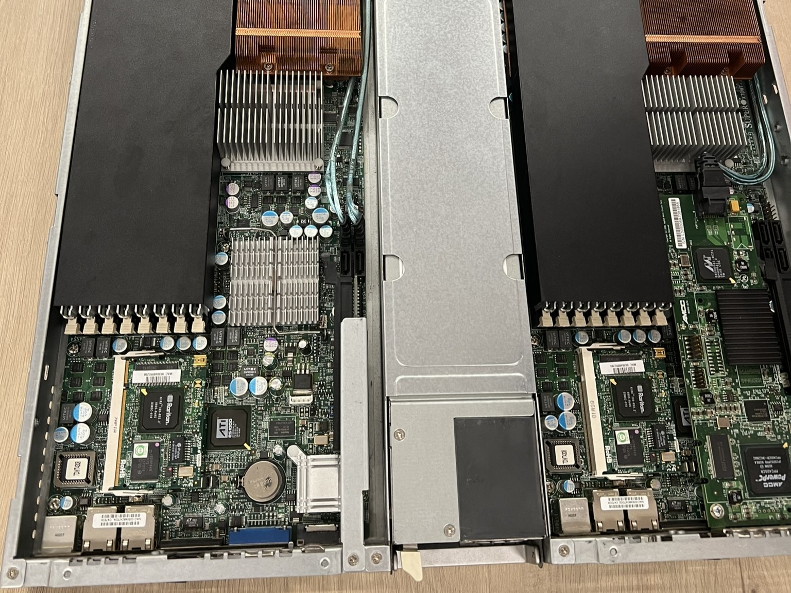

Servidor Linux
Configuració de servidors segurs mitjançant línia de comandes.
- Tasca 1: Permisos avançats de fitxers.
- Tasca 2: Configuració de servidors SSH i Web.
- Tasca 3: Scripts bàsics d'automatització.
Configuració de servidors segurs mitjançant línia de comandes.